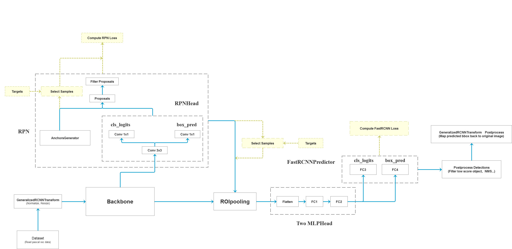

Faster-RCNN
Overview of Faster-RCNN

Codebase Hierarchy
- backbone: feature extraction
- network_files: Fast-RCNN & RPN
- train_utils: cocotools etc
- my_dataset.py: dataset class for VOC
- train_mobilenet.py: MobileNetV2 as backbone
- train_resnet50_fpn.py: resnet50 + FPN as backbone
- train_multi_GPU.py: multi-gpu training
- predict.py: inference script
- validation.py: generate record_mAP.txt on COCO
- pascal_voc_classes.json: pascal labels
Code Analysis
Entry Point
Same as the framework plot, there're three major components for Faster-RCNN: backbone, rpn, roi_heads.
- backbone: takes image as input and output features
- rpn: takes features and targets as input and is responsible for anchor generation, matching anchor to targets, sampling, computing losses (e.g., objectness, regressions), generating proposals etc.
- roi_heads: takes features, proposals, image sizes, targets as input and generate detections, compute losses. Its function overlaps with those of rpn. The difference is it refines the input proposals and compute losses for different classes rather than objectness.
class FasterRCNNBase(nn.Module):
"""
Main class for Generalized R-CNN.
Arguments:
backbone (nn.Module):
rpn (nn.Module):
roi_heads (nn.Module): takes the features + the proposals from the RPN and computes
detections / masks from it.
transform (nn.Module): performs the data transformation from the inputs to feed into
the model
"""
def __init__(self, backbone, rpn, roi_heads, transform):
super(FasterRCNNBase, self).__init__()
self.transform = transform
self.backbone = backbone
self.rpn = rpn
self.roi_heads = roi_heads
# used only on torchscript mode
self._has_warned = False
@torch.jit.unused
def eager_outputs(self, losses, detections):
# type: (Dict[str, Tensor], List[Dict[str, Tensor]]) -> Union[Dict[str, Tensor], List[Dict[str, Tensor]]]
if self.training:
return losses
return detections
def forward(self, images, targets=None):
# type: (List[Tensor], Optional[List[Dict[str, Tensor]]]) -> Tuple[Dict[str, Tensor], List[Dict[str, Tensor]]]
"""
Arguments:
images (list[Tensor]): images to be processed
targets (list[Dict[Tensor]]): ground-truth boxes present in the image (optional)
Returns:
result (list[BoxList] or dict[Tensor]): the output from the model.
During training, it returns a dict[Tensor] which contains the losses.
During testing, it returns list[BoxList] contains additional fields
like `scores`, `labels` and `mask` (for Mask R-CNN models).
"""
if self.training and targets is None:
raise ValueError("In training mode, targets should be passed")
if self.training:
assert targets is not None
for target in targets: # 进一步判断传入的target的boxes参数是否符合规定
boxes = target["boxes"]
if isinstance(boxes, torch.Tensor):
if len(boxes.shape) != 2 or boxes.shape[-1] != 4:
raise ValueError("Expected target boxes to be a tensor"
"of shape [N, 4], got {:}.".format(
boxes.shape))
else:
raise ValueError("Expected target boxes to be of type "
"Tensor, got {:}.".format(type(boxes)))
original_image_sizes = torch.jit.annotate(List[Tuple[int, int]], [])
for img in images:
val = img.shape[-2:]
assert len(val) == 2 # 防止输入的是个一维向量
original_image_sizes.append((val[0], val[1]))
# original_image_sizes = [img.shape[-2:] for img in images]
images, targets = self.transform(images, targets) # 对图像进行预处理
# print(images.tensors.shape)
features = self.backbone(images.tensors) # 将图像输入backbone得到特征图
if isinstance(features, torch.Tensor): # 若只在一层特征层上预测，将feature放入有序字典中，并编号为‘0’
features = OrderedDict([('0', features)]) # 若在多层特征层上预测，传入的就是一个有序字典
# 将特征层以及标注target信息传入rpn中
# proposals: List[Tensor], Tensor_shape: [num_proposals, 4],
# 每个proposals是绝对坐标，且为(x1, y1, x2, y2)格式
proposals, proposal_losses = self.rpn(images, features, targets)
# 将rpn生成的数据以及标注target信息传入fast rcnn后半部分
detections, detector_losses = self.roi_heads(features, proposals, images.image_sizes, targets)
# 对网络的预测结果进行后处理（主要将bboxes还原到原图像尺度上）
detections = self.transform.postprocess(detections, images.image_sizes, original_image_sizes)
losses = {}
losses.update(detector_losses)
losses.update(proposal_losses)
if torch.jit.is_scripting():
if not self._has_warned:
warnings.warn("RCNN always returns a (Losses, Detections) tuple in scripting")
self._has_warned = True
return losses, detections
else:
return self.eager_outputs(losses, detections)
# if self.training:
# return losses
#
# return detections